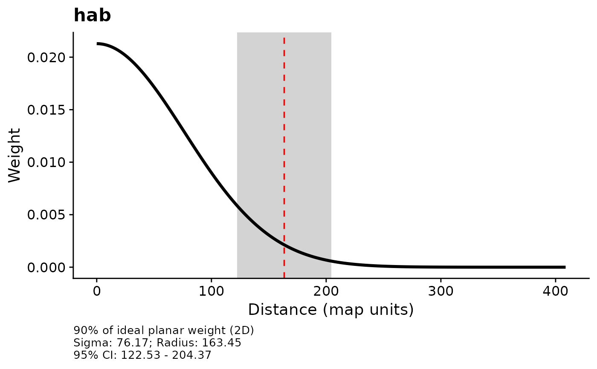
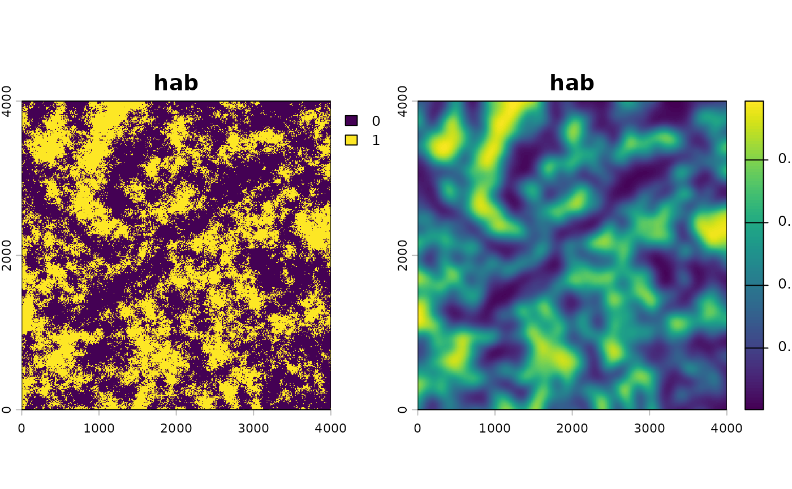
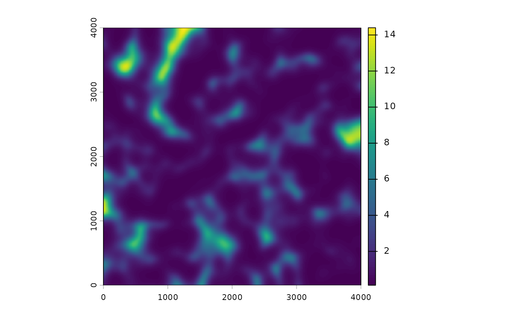

Estimates the scale of effect (sigma) of each kernel-weighted
covariate in a fitted model by maximizing the model's log-likelihood. The
scale of effect is the distance over which a landscape variable influences
the response. By default, multiScale_optim() recomputes the kernel-weighted
covariates at each candidate scale, refits your model, and searches with the
L-BFGS-B algorithm through stats::optim() (or
optimParallel::optimParallel() for parallel searches). Other backends
estimate the scales and the model parameters in one likelihood; see
multiScaleR-fitting-methods.
Usage
multiScale_optim(
fitted_mod,
kernel_inputs,
join_by = NULL,
par = NULL,
start_strategy = NULL,
screen_n_sigma = 5,
screen_n_jitter = 6,
screen_maxit = 8,
screen_jitter_sd = 0.5,
n_cores = NULL,
PSOCK = FALSE,
verbose = TRUE,
refit_fn = NULL,
backend = c("refit", "profile_glm", "joint_nb2", "joint_mixed", "conditional_logit"),
profile_control = list(),
covariate_transform = c("candidate", "raw"),
radius_grid = NULL
)Arguments
- fitted_mod
A fitted model object whose covariates include the kernel-weighted variables defined in
kernel_inputs. Supported classes includelm,glm,gls(nlme), andunmarkedFit(unmarked). Many other model classes also work throughstats::update()or a customrefit_fn. A predictor cannot be named"x", which is reserved for internal coordinate data. Fit the model withdata =naming a data frame that holds every model variable. A model fitted inside a function orlapply()is refitted in the environment where it was fitted, so a formula held in a local variable works; other inputs to the fitting call, such as afamilyorstartobject, must still exist there. Forsurvival::clogit(),survival::coxph(), andamtfits, also setmodel = TRUE, and add transformed terms such ascos(ta_)to the data as columns when the fit comes fromamt::fit_issf(), which does not keep its input data.- kernel_inputs
A list of class
"multiScaleR_data"created bykernel_prep(). It must contain the elementsraw_cov,d_list,min_D,max_D,unit_conv, andkernel. See multiScaleR_data.- join_by
Default:
NULL. Forunmarkedmodels whose rows repeat sites (for example one row per site and year), a data frame with one unique key row per spatial site inkernel_inputs, in the same order as those sites. Its named key columns must also occur in the fitted model'ssiteCovs. See "Fit unmarked models with repeated sites" below.- par
Optional numeric vector of starting values. Default:
NULL, which chooses starts automatically (seestart_strategy). For the refit backend, divide each starting sigma bymax_Dto match the internal scaled parameter space. For the analytic backends, give scales in internal distance units (map distance divided byunit_conv), as for the rows ofprofile_control$starts. The length must equal the number of optimized covariates, or twice that forkernel = "expow", where the shape values follow the sigma values. The"expow"layout keeps one shape position per optimized covariate, including hard radii, which ignore it; give a finite positive placeholder there.- start_strategy
Character. How to choose starting values when
par = NULL."single"uses one shared default start."screen"runs a cheap prescreen of sigma values and a few short searches before the one full search (see "Choose starting values" below). The default,NULL, uses"screen"whenkernel_inputswas prepared withkernel = "fixed"and the backend is"refit"without aradius_grid, and"single"otherwise. Under a fixed kernel every optimized scale is a hard radius, and a gradient search cannot leave a single start on that stepped likelihood. A refit search that returns its starting values gives a warning and recordsstart_stallindiagnostics(). The analytic backends ("profile_glm","joint_nb2","conditional_logit") run their own multi-start search and accept only"single"; set their starts withprofile_control.- screen_n_sigma
Positive integer. Number of log-spaced sigma values evaluated per covariate during the prescreen when
start_strategy = "screen". Default:5.- screen_n_jitter
Non-negative integer. Number of jittered candidate starts tried with short searches after the prescreen. Default:
6. Set to0to skip the short jittered runs.- screen_maxit
Positive integer. Maximum iterations for each short screening search. Default:
8.- screen_jitter_sd
Non-negative numeric scalar. Standard deviation of the multiplicative sigma jitter, on the log scale, used during screening. Default:
0.5.- n_cores
Positive integer. Number of cores for a parallel search through
optimParallel. Default:NULL(serial). Withstart_strategy = "screen", the short screening searches also use these cores. Parallel searches help most with many covariates or slow model fits. Whenn_cores > 1,multiScale_optim()checksestimate_multiscale_ram()and stops before screening or creating workers if the requested workers exceed its conservative RAM-based limit. Usen_cores = 1for a serial search, or rebuild the inputs withkernel_prep(..., bin = TRUE, store_cell_data = FALSE)(lean mode) when every covariate is kernel-weighted. Landscape and surface metrics cannot use lean mode. An unavailable RAM estimate does not block the run, a passing estimate does not guarantee enough memory, and the worker count is never reduced automatically.- PSOCK
Logical. On Windows, a PSOCK cluster is always used. On Unix, a FORK cluster is used by default because it is faster. Set
TRUEto force a PSOCK cluster on Unix. Default:FALSE.- verbose
Logical. Print the search status and diagnostic messages to the console. Default:
TRUE.- refit_fn
Optional function for refitting
fitted_modduring the search. WhenNULL(default),stats::update()(or theunmarkedequivalent) is used. Supply one only when the default refit is not enough; see "Supply a custom refit function" below.- backend
Character. The fitting method.
"refit"(default) refitsfitted_modat each candidate scale and works with any model class that can be refit."profile_glm"(Gaussian, Poisson, binomial, and NB2 GLMs),"joint_nb2"(NB2 models, including the exact Poisson boundary),"joint_mixed"(Poisson and NB2glmmTMBmodels with one random intercept), and"conditional_logit"(step-selection models) estimate the scales and the model parameters in one likelihood. Fit a Gaussian model withglm(family = gaussian())for the analytic backends, becauselm()fits are rejected. multiScaleR-fitting-methods gives each backend's requirements and the uncertainty it reports.- profile_control
Named list of settings for the analytic backends, such as the number of starts (
n_starts, default 6), a matrix of explicitstarts, iteration limits, NB2 theta bounds, and a PSOCKworker_poolfor"joint_nb2". Default:list(), which uses every default. The refit backend accepts no entries. The "Control settings" section of multiScaleR-fitting-methods lists every entry, the backends that accept it, and its default.- covariate_transform
Character. How optimized covariates enter the model.
"candidate"(default) centers and scales the kernel or metric values at each candidate scale, so a coefficient describes a change of one standard deviation."raw"keeps the values in their own units (for a binary layer, the kernel-weighted proportion) and records centers of zero and scales of one for prediction. Fit the starting model in those raw units, including any fixed spline knots."raw"requiresbackend = "refit". See multiScaleR-fitting-methods.- radius_grid
Experimental, so its behavior may change in a later release without a deprecation period. With
backend = "refit", an optional named list of candidate radius vectors, one for each optimized hard-radius predictor. For a single hard radius, supply the vector directly or name it in a list. Each vector needs at least two distinct radii in map units, betweenkernel_inputs$min_Dandkernel_inputs$max_D. The fit evaluates every combination and reoptimizes any smooth kernel bandwidths and shapes at each one. The defaultNULLuses the backend's usual search. See "Profile hard radii over a grid" in multiScaleR-fitting-methods.
Value
An object of class "multiScaleR", a list. The elements you will
use most are:
scale_est: the estimated sigma of each optimized covariate (Mean) and its standard error (SE), in map units;shape_est: the same for the shape parameter underkernel = "expow", otherwiseNULL;opt_mod: your model refit at the estimated scales, to use for coefficients, prediction, and effect plots;diagnostics: search and uncertainty diagnostics, read withdiagnostics();next_run: suggestedmax_Dand starting values for a follow-up fit.
multiScaleR describes every element, including those added by the analytic backends, and lists the methods that read the object.
How the search works
A kernel is a distance-weighting function that converts a raster layer
into one covariate value per survey point. Its scale, sigma, sets how fast
the weights decline with distance (see multiScaleR-kernels). The default
refit backend proposes sigma values (and shape values for "expow"),
recomputes the kernel-weighted covariates, refits fitted_mod, and keeps
the values that maximize the log-likelihood. Standard errors come from the
Hessian of this outer search. Hard-radius covariates have no Hessian
standard error because their likelihood changes in steps. Profile
likelihood intervals are available with summary(fit, profile = TRUE) or
profile_sigma(). multiScaleR-fitting-methods gives the rules for each
backend.
Read the warnings
multiScale_optim() prints a warning, and records a code in
warn_message, in three situations:
The scale approaches
max_D. The estimate is near or beyond the search extent, so the true scale may be larger. Rebuild the inputs withkernel_prep()using at least the suggestedmax_D, which is also stored infit$next_run$max_D, and refit.A sigma standard error is at least half its estimate. The scale is poorly determined. Assess whether the covariate is meaningful in your analysis and interpret it with caution.
A shape standard error is at least half its estimate. Assess whether the exponential power kernel suits your data.
A search that never leaves its starting values also warns and records
start_stall in diagnostics(). Supply different starts with par, or use
start_strategy = "screen".
Choose starting values
With start_strategy = "screen" and par = NULL, multiScale_optim()
first scouts the sigma range with one-dimensional, log-spaced scans of each
covariate. It then tests a few jittered starts with short searches that skip
the Hessian. The marginal scans are serial, but the short searches use
n_cores when you request a parallel search. Screening only chooses one
starting vector for the single full search. On Windows those parallel
screening searches use PSOCK workers, so the serialization advice under
"Speed up the search" applies to them too. Call set.seed() before
multiScale_optim() for reproducible screened starts.
To continue from an earlier fit, rebuild the inputs with fit$next_run$max_D
and pass fit$next_run$start_par as par. Those starts are scaled to that
max_D.
Speed up the search
When kernel_prep() was run with bin = TRUE (the default),
kernel-weighted covariates are computed from precomputed distance-binned
summaries instead of every buffer cell at each evaluation. The cost of an
evaluation then no longer depends on max_D, which usually speeds the
search by an order of magnitude or more for large buffers, with a
negligible binning approximation. Inputs created with
store_cell_data = FALSE (lean mode) carry only the binned summaries; they
still optimize, profile, and refit normally. Landscape-metric covariates
always use the exact per-cell path and so need the cell-level data.
For a parallel search, fit the starting model with fully
namespace-qualified functions so that its call serializes cleanly to the
workers. For example, fit a negative binomial model as
fitted_mod <- MASS::glm.nb(y ~ x, data = df) rather than relying on an
attached package.
Fit unmarked models with repeated sites
When the rows of an unmarked model repeat spatial sites, for example a
stacked layout with one row per site and year, the preparation object
still has one row per unique site. Add a site ID to the model's siteCovs
and pass one matching ID per prepared site through join_by. For spatial
sites c("A", "B") and model rows c("A", "B", "A", "B") for two years,
use join_by = data.frame(site = c("A", "B")) and include the four-row
site column in siteCovs. Multiple key columns are allowed. Prepared keys
must be unique, every model row must match one, and the IDs in the model
may repeat in any order. The model's response and site-covariate row order
is preserved.
The layout looks like this, where counts_by_year is a list of count
matrices, each with one row per site (in the order of
kernel_inputs$kernel_dat) and one column per visit:
site_id <- seq_len(nrow(kernel_inputs$kernel_dat))
y_stacked <- do.call(rbind, counts_by_year)
site_row <- rep(site_id, times = length(counts_by_year))
site_covs <- kernel_inputs$kernel_dat[site_row, , drop = FALSE]
site_covs$site_id <- site_id[site_row]
site_covs$Year <- factor(rep(seq_along(counts_by_year),
each = length(site_id)))
umf <- unmarked::unmarkedFramePCount(y = y_stacked, siteCovs = site_covs)
mod <- unmarked::pcount(~Year ~ Year + hab, data = umf, K = 100)
fit <- multiScale_optim(mod, kernel_inputs,
join_by = data.frame(site_id = site_id))Check that the rows of y_stacked and site_covs refer to the same
site-year records before fitting. Without join_by, model rows must match
the prepared sites one for one, in the same order. When both objects keep
the same row IDs their order is checked; otherwise you are responsible for
it. An open-population unmarked::pcountOpen() model instead stores one
row per site with the years across count columns, so it uses the same
static site covariates without join_by. Optimized covariates must be
static siteCovs; obsCovs and yearlySiteCovs cannot be optimized
through this site-level workflow. Sparse counts can leave scales weakly
identified, so examine the scale profile and diagnostics().
Supply a custom refit function
By default, multiScale_optim() refits the model with stats::update()
(standard models) or the unmarked equivalent. When that is not enough,
supply refit_fn. The function must accept the arguments model, data,
and context, and return a fitted model whose log-likelihood
stats::logLik() or insight::get_loglikelihood() can extract. A minimal
refit function:
refit_fn <- function(model, data, context) {
stats::update(model, data = data)
}For models that need their call rebuilt explicitly:
refit_fn <- function(model, data, context) {
call <- model$call
call$data <- quote(data)
eval(call, envir = list(data = data), enclos = parent.frame())
}With PSOCK clusters, refit_fn must serialize cleanly. Prefer
namespace-qualified calls such as stats::update() and avoid closures over
large local objects.
The function receives context$return_model = FALSE for scalar objective
evaluations and TRUE when a fitted model is wanted, including the final
refit at the selected scales. Use the flag to skip work that only a
returned model needs, such as coefficient standard errors.
The default unmarked refit already does this. When the fitting function
has an se argument, as occu(), pcount(), and gdistremoval() do,
objective evaluations refit with se = FALSE, so unmarked skips the
Hessian it computes after its optimizer converges. The estimates and
log-likelihood are unchanged, and each objective refit of an N-mixture or
distance-removal model takes about a quarter less time. Returned models,
including the final one, keep the original model's se setting. A
custom refit_fn replaces this default, so apply the same rule there if
you want the saving.
Fit wrapper model objects
Some packages return a wrapper around another fitted model. For example,
amt::fit_clogit() wraps a survival::clogit() fit in its model
component. multiScale_optim() unwraps these automatically when it can.
For amt::fit_clogit(), pass model = TRUE when fitting so the nested
clogit model keeps its model frame. For complete choice sets with learned
predictors such as base::scale(), use na.action = stats::na.fail to keep
the fitted transformation attributes, because some survival versions drop
them when applying omission, even with complete data.
See also
multiScaleR-fitting-methods for the backends,
multiScaleR for the returned object, kernel_prep() to prepare
the inputs, profile_sigma() for profile-likelihood intervals,
kernel_scale.raster() to map the fitted covariates, kernel_dist() for
effective distances, and
vignette("v01-quickstart", package = "multiScaleR") and
vignette("v02-user-guide", package = "multiScaleR") for worked
examples.
Examples
# \donttest{
set.seed(555)
points <- vect(cbind(c(5,7,9,11,13),
c(13,11,9,7,5)))
mat_list <- list(r1 = rast(matrix(rnorm(20^2),
nrow = 20)),
r2 = rast(matrix(rnorm(20^2),
nrow = 20)))
rast_stack <- rast(mat_list)
kernel_inputs <- kernel_prep(pts = points,
raster_stack = rast_stack,
max_D = 5,
kernel = 'gaussian',
sigma = NULL)
#>
#> No sigma values provided...
#> Creating necessary elements to optimize sigma
#>
#> Extracting values from raster layers...
## Example response data
y <- rnorm(5)
## Create data frame with raster variables
dat <- data.frame(y = y,
kernel_inputs$kernel_dat)
mod1 <- glm(y ~ r1 + r2,
data = dat)
## NOTE: This code is only for demonstration
## Optimization results will have no meaning
opt_mod <- multiScale_optim(fitted_mod = mod1,
kernel_inputs = kernel_inputs,
par = NULL,
n_cores = NULL)
#>
#>
#> Optimization complete
#>
#> At an optimization bound: sigma:r2. Wald SEs and limits are withheld for this parameter.
#> Wald SEs for the other smooth parameters hold the bounded ones fixed.
#> Coefficient uncertainty still conditions on the selected kernels.
#>
#> WARNING!!!
#> The estimated scale of effect approaches or exceeds the current search extent.
#> Consider increasing max_D in `kernel_prep` to >=16.44 to ensure accurate estimation of scale.
#>
#>
## Using package data
data('pts')
data('count_data')
hab <- terra::rast(system.file('extdata',
'hab.tif', package = 'multiScaleR'))
kernel_inputs <- kernel_prep(pts = pts,
raster_stack = hab,
max_D = 250,
kernel = 'gaussian')
#>
#> No sigma values provided...
#> Creating necessary elements to optimize sigma
#>
#> Extracting values from raster layers...
mod <- glm(y ~ hab,
family = poisson,
data = count_data)
## Optimize scale
opt <- multiScale_optim(fitted_mod = mod,
kernel_inputs = kernel_inputs)
#>
#>
#> Optimization complete
#>
#> WARNING!!!
#> The estimated scale of effect approaches or exceeds the current search extent.
#> Consider increasing max_D in `kernel_prep` to >=250.56 to ensure accurate estimation of scale.
#>
#>
## Summary of fitted model
summary(opt)
#>
#> Call:
#> multiScale_optim(fitted_mod = mod, kernel_inputs = kernel_inputs)
#>
#>
#> Kernel used:
#> gaussian
#>
#> ***** Optimized Scale of Effect *****
#>
#> Mean SE 2.5% 97.5%
#> hab 76.16637 9.567451 57.09847 95.23428
#>
#>
#> ====================================
#>
#> ***** Optimized Scale of Effect -- Distance *****
#> Scale distances (map units) at 90%, two definitions.
#>
#> 2D, radius of the circle for the ideal untruncated kernel (selected):
#> Mean 2.5% 97.5%
#> hab 163.45 122.53 204.37
#>
#> 1D, along a line through the point (comparison):
#> Mean 2.5% 97.5%
#> hab 125.28 93.92 156.65
#>
#>
#> ====================================
#>
#> ***** Fitted Model Summary *****
#>
#>
#> Call:
#> stats::glm(formula = y ~ hab, family = poisson, data = data)
#>
#> Coefficients:
#> Estimate Std. Error z value Pr(>|z|)
#> (Intercept) 0.4807 0.1021 4.707 2.51e-06 ***
#> hab 0.8691 0.0855 10.166 < 2e-16 ***
#> ---
#> Signif. codes: 0 ‘***’ 0.001 ‘**’ 0.01 ‘*’ 0.05 ‘.’ 0.1 ‘ ’ 1
#>
#> (Dispersion parameter for poisson family taken to be 1)
#>
#> Null deviance: 186.585 on 74 degrees of freedom
#> Residual deviance: 70.185 on 73 degrees of freedom
#> AIC: 232.29
#>
#> Number of Fisher Scoring iterations: 5
#>
#>
#> WARNING!!!
#> The estimated scale of effect approaches or exceeds the current search extent.
#> Consider increasing max_D in `kernel_prep` to >= 250.56 to ensure accurate estimation of scale.
#>
#>
#>
#> ***** Follow-up recommendation *****
#> Recommended `max_D`: 250.56
#> Recommended starting `sigma` values:
#> hab
#> 76.16637
#>
#> Action:
#> Refit from the optimized parameters and address the flagged diagnostics.
## 'True' parameter values data were simulated from:
# hab scale = 75
# Intercept = 0.5,
# hab slope estimate = 0.75
## Plot and visualize kernel density
plot(opt)

## Apply optimized kernel to the environmental raster
opt_hab <- kernel_scale.raster(hab, multiScaleR = opt)
#>
#> Smoothing spatRaster variable 'hab' from layer 'hab' at sigma = 76
plot(c(hab, opt_hab))

## Project model; scale & center
opt_hab.s_c <- kernel_scale.raster(raster_stack = hab,
multiScaleR = opt,
scale_center = TRUE)
#>
#> Smoothing spatRaster variable 'hab' from layer 'hab' at sigma = 76
mod_pred <- predict(opt_hab.s_c, opt$opt_mod, type = 'response')
plot(mod_pred)

## Custom refit hook for model classes that need explicit control.
## This example still uses glm(), but the same pattern can be used for
## classes whose default update path is not sufficient.
refit_glm <- function(model, data, context) {
stats::update(model, data = data)
}
opt_custom <- multiScale_optim(fitted_mod = mod,
kernel_inputs = kernel_inputs,
refit_fn = refit_glm)
#>
#>
#> Optimization complete
#>
#> WARNING!!!
#> The estimated scale of effect approaches or exceeds the current search extent.
#> Consider increasing max_D in `kernel_prep` to >=250.56 to ensure accurate estimation of scale.
#>
#>
## Opt-in NB2 fit: theta and kernel scales are estimated together.
if (requireNamespace("MASS", quietly = TRUE)) {
ki_nb <- kernel_prep(pts = pts, raster_stack = hab, max_D = 250,
kernel = "gaussian", bin = TRUE)
nb_data <- data.frame(ki_nb$kernel_dat)
nb_data$y <- rnbinom(nrow(nb_data),
mu = exp(0.5 + 0.8 * nb_data$hab), size = 2)
nb_initial <- glm(y ~ hab, data = nb_data,
family = MASS::negative.binomial(2))
nb_fit <- multiScale_optim(nb_initial, ki_nb, backend = "profile_glm",
n_cores = 1,
profile_control = list(n_starts = 6))
diagnostics(nb_fit)$profile_glm
predict(nb_fit) # Expected counts for the retained fitting rows.
if (nb_fit$uncertainty$available) {
predict(nb_fit, interval = "confidence")
vcov(nb_fit) # Includes kernel/coefficient/dispersion covariance.
}
}
#>
#> No sigma values provided...
#> Creating necessary elements to optimize sigma
#>
#> Extracting values from raster layers...
#> Analytic-profile GLM fit: 6/6 starts passed; family nbinom2.
#> log_scale:hab beta:(Intercept) beta:hab log_theta
#> log_scale:hab 0.166706071 0.0015047672 -0.0061313371 0.0224171251
#> beta:(Intercept) 0.001504767 0.0169312902 -0.0078480893 0.0001863306
#> beta:hab -0.006131337 -0.0078480893 0.0148171832 -0.0006320777
#> log_theta 0.022417125 0.0001863306 -0.0006320777 0.1745158389
# }